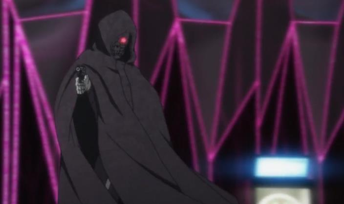
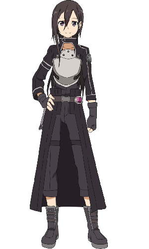
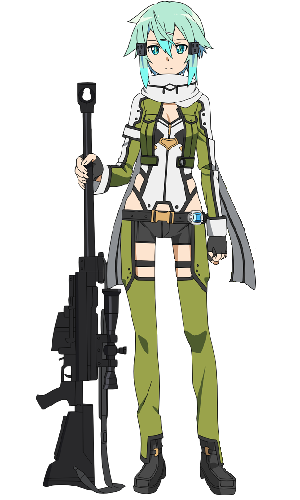
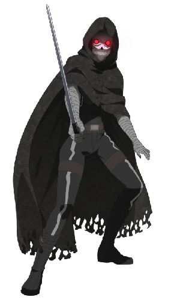
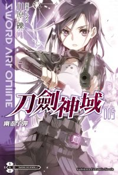
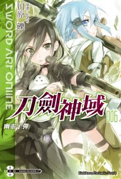
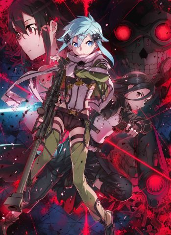

簡介
在拯救亞絲娜後，桐人刪除了舊有的遊戲數據，重新創辦了遊戲系帳號，並與在艾恩葛朗特認識的一行人，重新再ALO中遊玩。然而，在一年後，總務省的菊岡誠二郎，找上桐人，請他幫忙調查發生在VR射擊遊戲「Gun Gale Online」內的奇異事件，自稱「死槍」的玩家擁有槍擊遊戲內角色而殺死現實玩家的能力。

在菊岡誠二郎的協助下，桐人進入到Gun Gale Online，在因緣際會下，認識了遊戲中少數的女性玩家，詩乃，為了接近死槍，桐人和詩乃一起報名了BOB大賽，隨著接近決賽，死槍的秘密也逐漸揭曉...
主要角色

桐人，本名桐谷和人，為了調查在GGO中所發生的「死槍事件」而進入遊戲，因先前的遊戲經歷，選配的武器為一把光子劍及一支手槍。

詩音，本名朝田詩乃，為了追求現實生活中沒有的刺激感而進入遊戲，是桐人進入遊戲第一位結交的好友，使用的武器為一把狙擊槍及一支手槍。

死槍，本名不明，死槍事件的真凶。使用的武器沒有固定。在BOB的戰鬥中，有使用細劍、狙擊槍、手槍等武器。但在執行殺人計畫時，會固定使用一把名為「黑星・五四式」的手槍。
小說
作者為川原礫，單行本日版由電擊文庫出版，繁體中文版由台灣角川出版。

第五卷
日文版:2010年08月10日
繁體中文版:2011年01月28日

第六卷
日文版:2010年12月10日
繁體中文版:2011年05月20日
動畫
2012年7月起放映第二季動畫。第二季包含第五、六卷的幽靈子彈篇、外傳斷鋼聖劍篇及聖母聖詠篇，共24話。

音樂
片頭曲 《IGNITE》 作詞：Eir、小川智之，作曲：小川智之，編曲：Saku 歌：藍井艾露
片尾曲 《Startear》 作詞、作曲、編曲：Saku 歌：春奈露娜